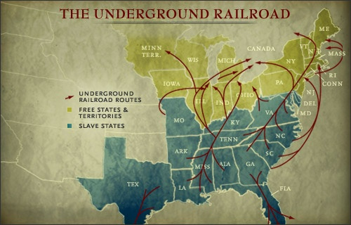

Instructions to Escape
Upon escaping from the plantations, make your way to nearby railway station. Maintain a low profile while travelling. These keywords will help you find friends to escape:

The Underground Railroads System
Stories of Escape And Change: Elizabeth Freeman
Elizabeth Freeman played a huge role in ending slavery in Massachusetts. Elizabeth Freeman, also known as Mum Bett, was born into slavery the year 1774 in New York. Freeman like most slaves experienced severe punishments and received a large workload from her master, Colonel Ashley,since she was young. In 1780,... she attended a public event at a town square where she heard the new ratified Massachusetts State Constitution. Article 1 of the Constitution stated equality and freedom be granted to all. Freeman understood the meaning of Article 1 and realized that the oppression and inhumane treatment she was receiving as a slave went against it. So she went to Theodore Sedgwick, an abolitionist lawyer, with her case suing for her freedom. Sedgwick agreed to take up her case along with the case of her slavemaster’s other slave, Brom. In the case of Brom and Bett Vs. Ashley, the court ruled in the favor of Brom and Bett. Both Brom and Bett were given 30 shillings for their labor and were given freedom. Mum Bett renamed herself to Elizabeth Freeman after winning the case. Freeman’s courage to stand up for herself made her the first African-American woman to successfully file a lawsuit for freedom in Massachusetts. This case set an example for others to raise their voices and fight for their freedom and eventually led to slavery being abolished in Massachusetts.